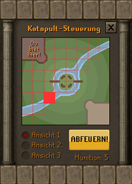
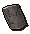
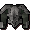
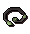
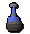

")
Burgenkampf
Einführung | Lage | Voraussetzungen | Empfohlene Ausrüstung | Teilnahme | Burgenkampf-Runden
Schwere Geschütze | Spielfenster | Belohnungen | Entwicklung
Schwere Geschütze | Spielfenster | Belohnungen | Entwicklung
Nur RuneScape-Mitglieder haben Zugang zu diesem Minispiel. Wenn ihr euch anmeldet, könnt auch ihr dieses Feature nutzen.
Bitte beachtet, dass es sich hierbei um ein 'sicheres' Minispiel handelt. Falls ihr während des Minispiels sterbt, behaltet ihr alle eure Gegenstände.
Einführung

Burgenkampf ist ein Kampfspiel, bei dem es darum geht, die gegnerische Burg zu erobern. Ihr müsst eure eigene Burg verteidigen und gleichzeitig die Burg der anderen stürmen und deren Flagge entführen. Euer Team erhält jedes Mal einen Punkt, wenn ihr die Flagge der Gegner erobert habt. Das Team mit den meisten Punkten gewinnt.
Lage

Am schnellsten gelangt ihr zur Burgenkampf-Arena mit dem Duell-Ring, der euch direkt dorthin teleportiert. Wenn ihr mit den Feen-Ringen anreist, stellt sie auf BKP ein, dann landet ihr unmittelbar südlich der Arena. Es gibt auch noch diverse andere Teleportzauber, die euch in die Nähe bringen, z. B. den Ardougne- und Wachturm-Teleport.
Voraussetzungen
Fürs Mitspielen gibt es keine Voraussetzungen - ihr müsst nur erscheinen und euch eine Seite aussuchen. Allerdings dürft ihr keinen Helm oder Umhang tragen!
Empfohlene Ausrüstung
Wir empfehlen euch, gutes Rüstzeug und gute Waffen mitzubringen, damit ihr gegen jede Art von Gegner gewappnet seid. Eine gute Auswahl an Tränken ist in Krisensituationen ebenfalls unerlässlich. Wenn ihr bereits Burgenkampf-Belohnungen besitzt, könnt ihr euch mit diesen ebenfalls einen gewissen Vorteil verschaffen.
Mit dem Burgenkampf-Armband könnt ihr außerdem die Heilkraft des Verbandszeugs steigern.
Hinweis: Gegenstände, die nichts mit Kämpfen zu tun haben, wie z.B. Nahrungsmittel, dürfen nicht mit in die Arena gebracht werden!
Teilnahme

Um an einem Spiel teilzunehmen, müsst ihr euch für eine der Mannschaften entscheiden und dann durch ein Portal gehen. Nehmt ihr das rote Portal auf der linken Seite, so stoßt ihr zur Mannschaft von Zamorak, während das blaue Portal auf der rechten Seite euch der Mannschaft von Saradomin zuteilt. Das grüne Portal in der Mitte ist das Guthix-Portal. Tretet ihr durch dieses Portal, werdet ihr in die Mannschaft eingeteilt, die gerade am wenigsten Spieler hat, also entweder Saradomin oder Zamorak. Wenn ihr durch das Portal gegangen seid, kommt ihr in einen Warteraum für eure Mannschaft.
![[Bild]](../../img/main/kbase/minigames/castlewars/castle_wars_sheep.gif) Falls ihr ein Portal mit einem Gegenstand eines anderen Gottes passiert (wenn ihr z. B. das Zamorak-Portal mit einem Gegenstand von Saradomin betretet), werdet ihr bis zum Beginn des Spiels in ein anderes Wesen verwandelt. Zamorak bestraft euch, indem er euch in einen Kobold verwandelt. Saradomin lässt euch als Hase über euer Benehmen nachdenken. Guthix macht euch eins mit der Natur - als Schaf. Doch keine Sorge, sobald das Spiel beginnt oder ihr durch das Ausgangsportal geht, verwandelt ihr euch wieder zurück.
Falls ihr ein Portal mit einem Gegenstand eines anderen Gottes passiert (wenn ihr z. B. das Zamorak-Portal mit einem Gegenstand von Saradomin betretet), werdet ihr bis zum Beginn des Spiels in ein anderes Wesen verwandelt. Zamorak bestraft euch, indem er euch in einen Kobold verwandelt. Saradomin lässt euch als Hase über euer Benehmen nachdenken. Guthix macht euch eins mit der Natur - als Schaf. Doch keine Sorge, sobald das Spiel beginnt oder ihr durch das Ausgangsportal geht, verwandelt ihr euch wieder zurück.
Durch die Kristallkugel neben Lanthus könnt ihr das Geschehen in der Arena aus verschiedenen Blickwinkeln mitverfolgen. Eine Runde Burgenkampf dauert zwanzig Minuten. Zwischen zwei Runden gibt es eine 5-minütige Pause, die ihr im Warteraum verbringt. Im oberen Bereich des Bildschirms wird euch angezeigt, wie lange ihr bis zum Beginn der nächsten Runde warten müsst.
Burgenkampf-Runden

Ihr solltet nicht zu lange im Startraum verweilen. Wenn ihr ihn innerhalb von zwei Minuten nicht verlassen habt, landet ihr wieder im Wartebereich und müsst aufs nächste Spiel warten. Der Startraum kann nur von Mitgliedern eures Teams betreten werden. Folglich könnt ihr den Startraum der Gegner auch nicht betreten.


| Gegenstand | Verwendung |
![[Bild]](../../img/main/kbase/items/misc/emptybucket.gif) Leerer Eimer |
Kann mit Wasser aus einer Wasserquelle gefüllt und dann zum Löschen von Katapulten, Ballisten oder Barrikaden verwendet werden. |
![[Bild]](../../img/main/kbase/items/misc/climbing_rope.gif) Kletterseil |
Damit könnt ihr die Burgmauern eurer Gegner erklimmen (vorher müsst ihr das Seil allerdings an den Zinnen im ersten Stock anbringen). |
![[Bild]](../../img/main/kbase/items/misc/cw_barricade.gif) Barrikade |
Damit könnt ihr den Ansturm der Gegner aufhalten (jedes Team darf maximal 10 gleichzeitig aufgestellt haben). |
![[Bild]](../../img/main/kbase/items/potions/other_potions/explosive_potion.gif) Brandbombe |
Zum Sprengen von Barrikaden und unterirdischem Gestein oder zum Zerstören des gegnerischen Katapults. Nicht fallen lassen! (Verletzungsgefahr) |
![[Bild]](../../img/main/kbase/items/misc/toolkit.gif) Werkzeugkasten |
Zum Reparieren von beschädigten Katapulten und Türen. |
![[Bild]](../../img/main/kbase/items/pickaxes/bronze_axe1.gif) Spitzhacke |
Zum Räumen von Gestein auf unterirdischen Pfaden und zum Einreißen von Wänden. |
![[Bild]](../../img/main/kbase/items/misc/cw_rock.gif) Felsbrocken |
Wird als Munition für die Katapulte verwendet. |
![[Bild]](../../img/main/kbase/items/misc/cw_flare.gif) Leuchtsignal |
Damit könnt ihr dem Teamkollegen am Katapult ein Leuchtsignal geben. |
![[Bild]](../../img/main/kbase/items/misc/bandage.gif) Verbandszeug |
Verbandszeug liegt im Startraum, nicht im Lagerraum. Damit könnt ihr bis zu 100 Trefferpunkte heilen, 30 % eurer Ausdauer wiederherstellen und euch von Vergiftungen heilen. |
![[Bild]](../../img/main/kbase/items/lanturns_candle_torch/tinderbox1.gif) Zunderbüchse |
Auch die Zunderbüchse liegt im Startraum und nicht im Lager. Damit könnt ihr Barrikaden, Ballisten und Katapulte in Flammen stecken. |
Erdgeschoss

Von eurer Burg aus gibt es drei verschiedene überiridische Wege in die Burg der Gegner. Ihr könnt an den Außenmauern vorbei zu den Trittsteinen in den gegenüberliegenden Ecken stürmen oder um die Speerwände herum und über die Brücke zur Insel vorrücken. Auf der Insel gibt es zwei Falltüren, durch die man ins Zentrum des Tunnelsystems gelangt.
| Zamoraks Teamflagge | Zamoraks Katapult | Trittsteine | |||
| Leitern zu den Tunneln | Saradomins Teamflagge | Saradomins Katapult |
Karte des Tunnelsystems

In jedem der vier Tunnel im Untergrund liegen Felsen, die ihr zur Seite räumen müsst. Denkt also daran, eine der Spitzhacken aus dem Lagerraum mitzunehmen. Wenn ihr einen der Tunnel von Felsen befreit habt, könnt ihr die Mauer daneben mit der Spitzhacke zum Einsturz bringen. Vorsicht! Wenn ein Gegner in einem freigeräumten Tunnel gegen eine Tunnelwand hackt, kann es sein, dass die Decke über euch einstürzt.
Die unterirdischen Tunnel sind eng, also könnt ihr anderen anhand von Barrikaden den Weg versperren. Falls euch jemand den Weg versperrt hat, könnt ihr die Barrikaden beseitigen, indem ihr sie angreift, oder sie mit einer Zunderbüchse (die ihr ebenfalls auf dem Tisch im Erdgeschoss findet) in Brand setzt.
| Zamoraks Warteraum. | Eingestürzte/instabile Tunnel | Saradomins Wartebereich |
Schwere Geschütze
Beide Teams können ihre Burg auf unterschiedliche Weise verteidigen. Außerdem steht euch ein Katapult im ersten Stock zur Verfügung, womit ihr Gebiete im überirdischen Bereich beschießen könnt. Falls einer von euch eine Balliste mitgebracht habt, könnt ihr diese auf einer der acht Ballistenplattformen aufstellen.
So benutzt man das Katapult

Zum Abfeuern des Katapults müsst ihr auf eins der Felder im Zielfenster klicken (die Katapulte reichen nur bis zum Fluss). Das ausgewählte Feld wird rot markiert. Klickt dann auf FEUER!, um den Ort zu beschießen.
Wenn euer Teamkollege euch ein Leuchtsignal geschickt hat, wird das Feld, aus dem das Signal kam, gelb angezeigt. Mitglieder eures eigenen Teams könnt ihr mit dem Katapult nicht verletzen, also habt keine Hemmungen, mittenrein zu feuern! Mit gezielter Teamarbeit kann man so präzise und effektiv die Ballisten der Gegner zerstören und die Armee der Gegner dezimieren.
Die Gegner haben ebenfalls ein Katapult, das ihr mit einer Zunderbüchse oder einer Brandbombe in die Luft jagen könnt. Falls jemand euer Katapult sabotiert, könnt ihr es mithilfe eines Werkzeugkastens wieder funktionstüchtig machen.

Ballisten

Ballisten können ebenso angegriffen werden wie Katapulte, also verteidigt sie gut. Eine gut geschützte und gewartete Balliste ist ein wertvoller Bestandteil eurer Verteidigungsstrategie.

Spielfenster
Während eines Spiels werden in eurem Spielfenster Informationen über das aktuelle Spiel eingeblendet. Ihr seht dort zum Beispiel, wie viel Zeit euch übrig bleibt und in welchem Zustand eure Verteidigungsanlagen sind. Grün bedeutet, die Verteidigungsanlage ist intakt. Rot heißt, sie wurde sabotiert. Die Flaggen haben einen dritten Status - Gelb. Das bedeutet, dass die Flagge fallen gelassen wurde (also weder im Flaggenständer steht, noch von jemandem getragen wird).
| Symbol | Grüne Meldung | Rote Meldung |
Status von Saradomins Flagge |
Sicher | Gestohlen |
Status von Zamoraks Flagge |
Sicher | Gestohlen |
Haupteingang |
Der Zustand des Tors wird in grün angezeigt. Je mehr Schaden ihm zugefügt wird, desto roter wird die Anzeige. | |
Seiteneingang |
Geschlossen | Offen |
Tunnel 1 und 2 |
Eingestürzt | Freigeräumt |
Status des Katapults |
Funktionsfähig | Zerstört |
![[Bild]](../../img/main/kbase/minigames/castlewars/time_left.gif)
Verbleibende Zeit |
- | - |
Belohnungen
Wenn eine Runde vorbei ist (nach zwanzig Minuten) erhalten alle Spieler im Siegerteam zwei Burgenkampf-Tickets. Falls das Spiel unentschieden endet, erhalten die Spieler beider Teams je ein Burgenkampf-Ticket. Mit diesen Tickets könnt ihr euch bei Lanthus, der am Eingang zur Burgenkampf-Arena steht, Belohnungen kaufen. In der folgenden Tabelle seht ihr, welche Belohnungen es gibt. Ihr könnt die Belohnungen bei Lanthus für den gleichen Preis zurücktauschen, für den ihr sie gekauft habt. Ihr könnt euch also beispielsweise alle Teile einer einfachen Zierrüstung kaufen und sie dann Stück für Stück gegen detaillierte Zierausrüstung tauschen, sobald ihr euch die bessere Rüstung leisten könnt.
| Gegenstand | Tickets |
![[Bild]](../../img/main/kbase/armour/melee/cw1_helm.gif) Einfacher Zierhelm |
5 |
![[Bild]](../../img/main/kbase/armour/melee/cw1_platebody.gif) Einfacher Zierplattenpanzer1 |
8 |
![[Bild]](../../img/main/kbase/armour/melee/cw1_platelegs.gif) Einfache Zierbeinlinge1 |
6 |
|  Einfacher Zierschild1 |
4 |
![[Bild]](../../img/main/kbase/weapons/melee/cw1_sword.gif) Einfaches Zierschwert |
6 |
![[Bild]](../../img/main/kbase/armour/melee/cw2_helm.gif) Detaillierter Zierhelm |
50 |
|  Detaillierter Zierplattenpanzer2 |
80 |
![[Bild]](../../img/main/kbase/armour/melee/cw2_platelegs.gif) Detaillierte Zierbeinlinge2 |
60 |
![[Bild]](../../img/main/kbase/armour/melee/cw2_shield.gif) Detaillierter Zierschild2 |
40 |
![[Bild]](../../img/main/kbase/weapons/melee/cw2_sword.gif) Detailliertes Zierschwert |
60 |
![[Bild]](../../img/main/kbase/armour/melee/cw3_helm.gif) Filigraner Zierhelm |
500 |
![[Bild]](../../img/main/kbase/armour/melee/cw3_platebody.gif) Filigraner Zierplattenpanzer3 |
800 |
![[Bild]](../../img/main/kbase/armour/melee/cw3_platelegs.gif) Filigrane Zierbeinlinge3 |
600 |
![[Bild]](../../img/main/kbase/armour/melee/cw3_shield.gif) Filigraner Zierschild3 |
800 |
![[Bild]](../../img/main/kbase/weapons/melee/cw3_sword.gif) Filigranes Zierschwert |
600 |
![[Bild]](../../img/main/kbase/armour/melee/cw4_helm.gif) Plakativer Zierhelm |
650 |
![[Bild]](../../img/main/kbase/armour/melee/cw4_platebody.gif) Plakativer Zierplattenpanzer4 |
1100 |
![[Bild]](../../img/main/kbase/armour/melee/cw4_platelegs.gif) Plakative Zierbeinlinge4 |
800 |
![[Bild]](../../img/main/kbase/armour/melee/cw4_shield.gif) Plakativer Zierschild4 |
500 |
![[Bild]](../../img/main/kbase/weapons/melee/cw4_sword.gif) Plakatives Zierschwert |
800 |
|  Guthix-Nimbus* |
300 |
![[Bild]](../../img/main/kbase/minigames/castlewars/saradomin_halo.gif) Saradomin-Nimbus* |
300 |
![[Bild]](../../img/main/kbase/minigames/castlewars/zamorak_halo.gif) Zamorak-Nimbus* |
300 |
![[Bild]](../../img/main/kbase/armour/melee/cw_faithful_shield1.gif) Treueschild |
200 |
![[Bild]](../../img/main/kbase/items/clothing/saradomin_team_hood.gif) Saradomin-Teamkapuze |
10 |
![[Bild]](../../img/main/kbase/items/clothing/saradomin_team_cape.gif) Saradomin-Teamumhang |
10 |
![[Bild]](../../img/main/kbase/items/clothing/zamorak_team_hood.gif) Zamorak-Teamkapuze |
10 |
![[Bild]](../../img/main/kbase/items/clothing/zamorak_team_cape.gif) Zamorak-Teamumhang |
10 |
![[Bild]](../../img/main/kbase/items/clothing/castle_wars_flag_cape.gif) Umhang der Flaggenträger~ |
2 |
![[Bild]](../../img/main/kbase/items/clothing/castle_wars_kills_cape.gif) Umhang der Siegreichen~ |
2 |
![[Bild]](../../img/main/kbase/items/clothing/castle_wars_hobbyist_cape.gif) Umhang der Burgvögte~ |
2 |
![[Bild]](../../img/main/kbase/items/clothing/castle_wars_enthusiast_cape.gif) Umhang der Burggrafen~ |
2 |
![[Bild]](../../img/main/kbase/items/clothing/castle_wars_professional_cape.gif) Umhang der Burgherzöge~ |
2 |
![[Bild]](../../img/main/kbase/minigames/castlewars/ballista_base.gif) Ballistenstativ# |
2 |
![[Bild]](../../img/main/kbase/minigames/castlewars/ballista_ammo_stock.gif) Ballistenköcher# |
2 |
![[Bild]](../../img/main/kbase/minigames/castlewars/ballista_bow.gif) Ballistenbogen# |
2 |
![[Bild]](../../img/main/kbase/minigames/castlewars/ballista_chamber.gif) Ballistengehäuse# |
2 |
![[Bild]](../../img/main/kbase/minigames/castlewars/ballista_ammo.gif) Ballistenmunition# |
4 |
![[Bild]](../../img/main/kbase/minigames/castlewars/melee_potion_set.gif) Nahkampftrank-Set+ |
1 |
|  Fernkampftrank-Set+ |
1 |
![[Bild]](../../img/main/kbase/minigames/castlewars/magic_potion_set.gif) Magietrank-Set+ |
1 |
1Wenn ihr den einfachen Plattenpanzer, die dazugehörigen Beinlinge und den Schild tragt, richtet ihr im Burgenkampf bei gegnerischen Spielern 10 % mehr Schaden an.
2Wenn ihr den detaillierten Plattenpanzer, die dazugehörigen Beinlinge und den Schild tragt, richtet ihr beim Burgenkampf mehr Schaden an - bei anderen Spielern 15 %, bei Barrikaden und Ballisten 10 %.
3Wenn ihr den filigranen Plattenpanzer, die dazugehörigen Beinlinge und den Schild tragt, richtet ihr beim Burgenkampf mehr Schaden an - bei anderen Spielern 20 %, bei Barrikaden und Ballisten 10 %. Außerdem können euch Katapulte nichts mehr anhaben.
4Wenn ihr den plakativen Plattenpanzer, die dazugehörigen Beinlinge und den Schild tragt, richtet ihr beim Burgenkampf mehr Schaden an - bei anderen Spielern 25 %, bei Barrikaden und Ballisten 10 %. Außerdem können euch Katapulte und Ballisten nichts mehr anhaben.
*Der Guthix-Nimbus reduziert bei den folgenden Gebeten die Geschwindigkeit, mit der ihr Gebetspunkte verliert: Schnelle Reflexe, Verbesserte Reflexe, Unglaubliche Reflexe, Ritterlichkeit, Frömmigkeit. Der Saradomin-Nimbus gilt für die folgenden Gebete: Lederhaut, Steinhaut, Stahlhaut, Ritterlichkeit, Frömmigkeit. Der Zamorak-Nimbus gilt für: Kraftschub, Übernatürliche Kraft, Ultimative Kraft, Ritterlichkeit, Frömmigkeit.
~Die Umhänge kann man nur kaufen, wenn man bestimmte Erfolge erzielt hat. Umhang der Flaggenträger: für Leute, die in einer Runde die meisten Flaggen erobert haben. Umhang der Siegreichen: für Spieler, die in einer Runde die meisten anderen Spieler bezwungen haben. Umhang der Burgvögte: nach dem Abschluss von 500 Runden Burgenkampf. Umhang der Burggrafen: nach dem Abschluss von 1.000 Runden. Umhang der Burgherzöge: nach dem Abschluss von 5.000 Runden.
#Bevor ihr im Burgenkampf eine Balliste benutzen könnt, müsst ihr alle vier Ballistenteile und mindestens eine Ladung Munition kaufen. Ihr könnt bis zu 100 Ladungen Munition mit ins Spiel nehmen.
+Bestandteile des Nahkampftrank-Sets: 1x starker Angriffstrank, 1x starker Stärketrank, 1x starker Verteidigungstrank, 1x starker Ausdauertrank.
Bestandteile des Fernkampftrank-Sets: 1x starker Fernkampftrank, 1x starker Verteidigungstrank, 1x starker Ausdauertrank.
Bestandteile des Magietrank-Sets: 1x starker Magietrank, 1x starker Verteidigungstrank, 1x starker Ausdauertrank.
Die Tränke in diesen Sets können nur während Burgenkampf benutzt werden.
Die Werte für die Belohnungsgegenstände, die ihr handhaben/tragen könnt, seht ihr unter Nahkampf - Burgenkampf-Gegenstände.
Entwicklung
| Original | Überarbeitung | |||
| Entwicklung: | Graham B | Entwicklung: | Tim C | |
| Grafik: | Joe R, John S | Grafik: | Alec V, Gurpreet K | |
| Qualitätssicherung: | Danny G | Qualitätssicherung: | Thomas H, Adam D, Liam H | |
| Audio: | Ian T | Audio: | Sam J | |

Weitere Artikel in Minispiele
|
|
|
Weiterführende Informationen Wenn euch dieser Artikel nicht weitergeholfen hat, könnt ihr in den folgenden Kapiteln der RuneScape-Webseite mehr Informationen finden:
|
|